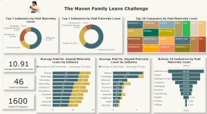
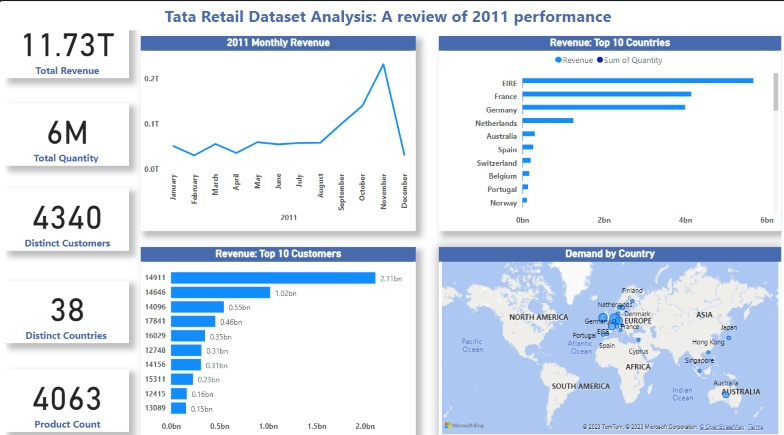
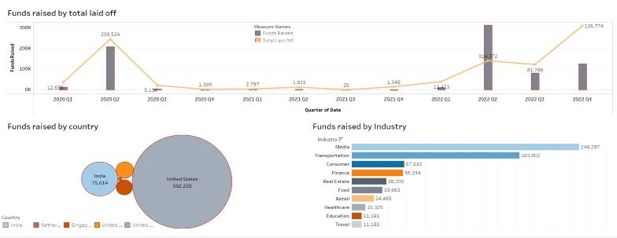
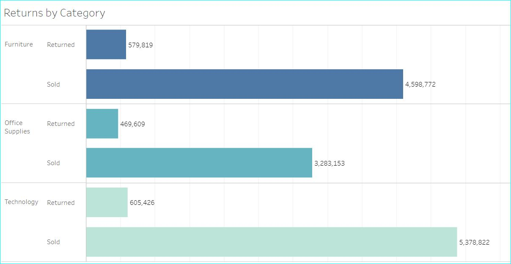

The Maven Analytics Team provided a dataset for this Family Leave challenge and I had to jump in to participate.
The dataset contains 1601 rows of data, and each row represent a company. It has the company name, Industry, and detailsof paid and unpaid maternity and paternity records.
My EDA includes the following steps:
1. I observed that there were a lot of N/A rows in the data, they were too many rows to delete. I decided to inpute a 0 everywhere there was an N/A.
2. The industry column had a lot of bogus data. Some industries were repeated with an added string. I created a new column to categorize the industry column and named it "Industry Category". This column gave the data a cleaner look and feel.
With this new column, I was able to move the extra description from the industry column into this new one. For instance, Legal services as an industry was moved into a category, with Law firm as the industry. Also, Leisure, travel & tourism was moved to the category column under the Hospitality industry. Pharmaceutical & Drug stores was moved as a category under the Pharmaceutical industry.
To read more about the analysis, check out my article on Medium

Shortly before embarking on my data journey, I set a goal to empower the local small businesses around me with the right tools to understand their data to grow their businesses.
Some time has passed between when I first penned down that goal, to this period, where I am actually beginning to see a connection.
Most micro and small businesses keep data, but the point of keeping data is not just for record purposes, but to draw insights from the data to drive strategic decisons that can improve business processes.
Working with the Tata dataset was an enjoyable experience for me. I had four main tasks, and they were to create...

Layoffs are a new norm post-COVID-19 and are a norm that is not exactly a good thing.
The Harvard Business Review (2022) gives a good summary of layoffs here-“Research has long shown that layoffs have a detrimental effect on individuals and on corporate performance. The short-term cost savings provided by a layoff are often overshadowed by bad publicity, loss of knowledge, weakened engagement, higher voluntary turnover, and lower innovation — all of which hurt profits in the long run. To make intelligent and humane staffing decisions in the current economic turmoil, leaders must understand what’s different about today’s larger social landscape”.
When looking for datasets for this project, I stumbled on a lot of interesting datasets which I was eager to analyze to see what insights I could draw and how to use what I had been learning all semester. However, I choose this one on layoffs because ...

What's not to love about this dataset? Variables of all sorts, and a chance to dig in deep and find hidden gems!
I enjoyed working with this dataset.
The data collected over a 4 year span (2009–2012), had 22 variables with over 8,000 rows of data. The data was cleaned and ready to go (a dream come true), so no preprocessing was needed. I used Tableau to draw insights from ...